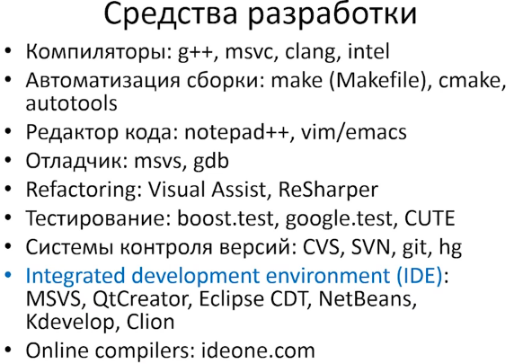

Средства разработки

33:21 - Заголовочные файлы(headers)
1:00:39 - препросессор(условная компиляция)
Сборка из нескольких файлов
dbg - отладчик
Опубликовано:
Библиртеки
Указатели
- What Are Pointers? (C++)
- Absolute Beginners Guide To "olcConsoleGameEngine.h"
- Code-It-Yourself! 3D Graphics Engine Part #1 - Triangles & Projection
- Programming Balls #1 Circle Vs Circle Collisions C++
Winderton
Winderton
- О comp scie, основах программирования, Си и так далее... + розыгрыш книги!
Winderton
Winderton
- 1
- 2
- .
- .
- 5
winderton winderton winderton
Phantomium
Лекция 2 | Основы C++, первый семестр | Евгений Линский | CSC | Лекториум
Опубликовано: 15 апр. 2014 г.
Библиртеки
Указатели
Лекция 3 | Основы C++, первый семестр | Евгений Линский | CSC | Лекториум
Опубликовано: 16 июл. 2013 г
Библиртеки
Указатели
03 - Многопоточность в C/C++. Сокеты Беркли. Мультиплексирование
05 - Программирование Linux. Сетевые возможности
Создание игры на C++ / Змейка - Урок #1 (Создание карты)